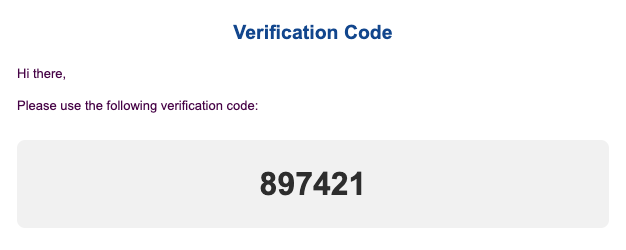

The LU Campus Safety App is designed to provide a secure environment for students, faculty, and staff at Lawrence University. With this app, you can request help quickly—whether it’s for a ride across campus, assistance at an off-campus location, unlocking a room, or reporting a concern. You can make requests instantly or schedule them in advance for convenience and safety.
Download on the App StoreWe're here to support you. If you have any questions, issues, or feedback about the LU Campus Safety App, feel free to contact us:
We value your input. If you have suggestions or want to report bugs, please email us with as much detail as possible.
This is how our verification email looks when you sign up:
